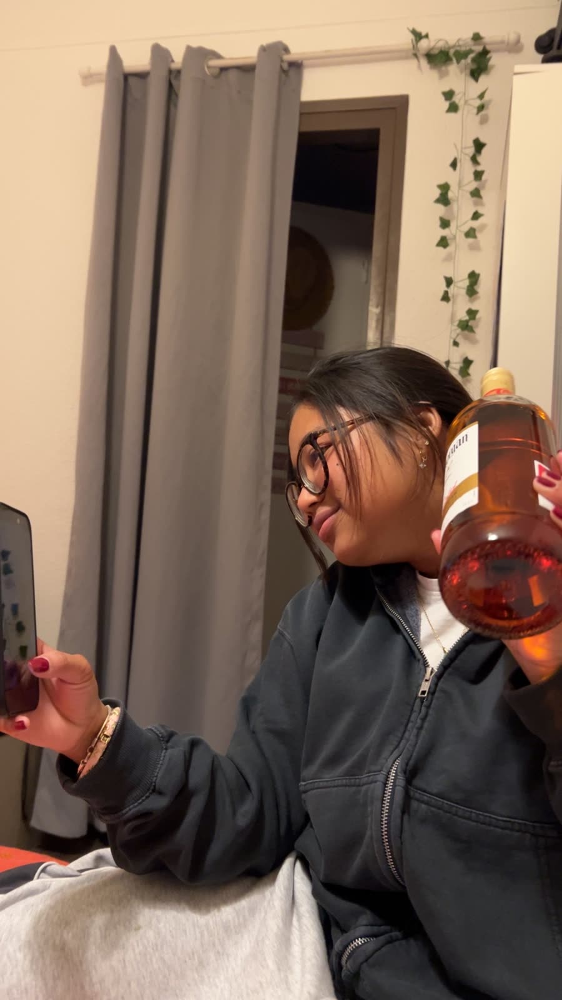

Le plan de bataille
C’est un samedi soir, donc aucune excuse pour rentrer tôt !
- Quand Samedi 21 novembre 2026, dès 22 h. Le dimanche matin est officiellement annulé.
- Où 7 rue de l'armée Patton, 54000 Nancy
- Dress code Chic en haut, chaussures de combat aux pieds pour survivre sur la piste.
- Droit d’entrée Ta bonne humeur, ta bouteille préférée, et de quoi tenir jusqu’au brunch du dimanche.
Clique si tu manques d’inspiration pour annuler le repas de famille du dimanche.
Pièces à conviction
Dossier à charge. Toute ressemblance avec ce qui va se passer samedi est purement garantie.

Ta mission secrète du soir
Chaque invité doit tirer au sort son gage officiel avant samedi. Fais une capture d’écran !
❓ Quel sera ton destin samedi soir ?
Compteur de température
Sobre comme un chameau · 0 %
Tournées générales offertes : 0
Verdict final : tu signes ?
Attention, le bouton « Non » est très susceptible.